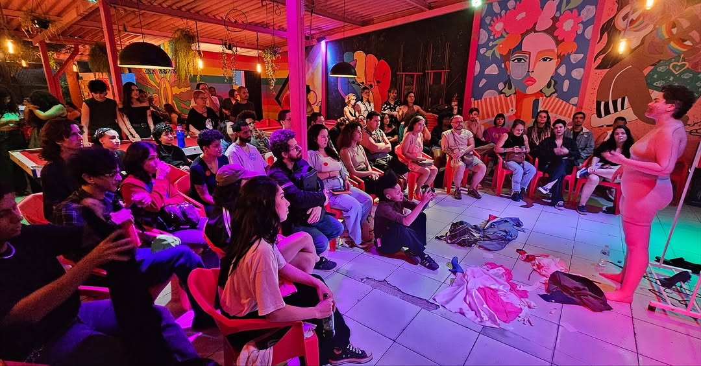
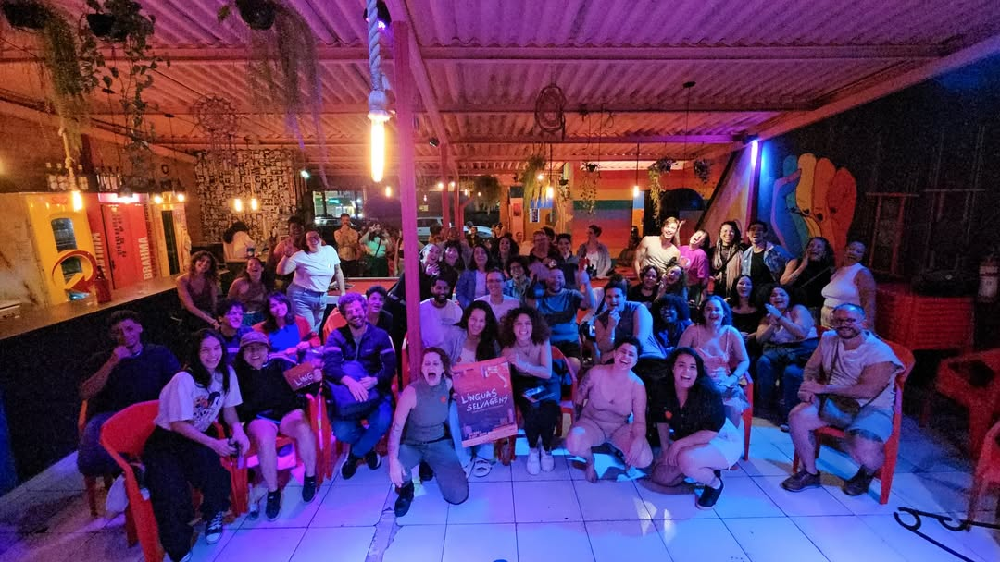

Como começou
Desde 2018, sapatonas em Uberlândia já se encontravam de forma esparsa. Mesmo pontuais, esses encontros revelavam uma vontade coletiva de se reunir, se reconhecer e construir algo em comum.
[ko-le-Ú-di] — Coletivo Lésbico de Uberlândia.
Mais do que um nome, CoLeUdi é encontro, articulação e presença. É sobre criar laços entre nós e construir espaços nossos com carinho, reconhecimento e permanência.
Nossos valores atravessam tudo o que fazemos: visibilidade, interseccionalidade e acolhimento.
O CoLeUdi nasceu do desejo urgente de existir juntas — com voz, presença e pertencimento.
Desde 2018, sapatonas em Uberlândia já se encontravam de forma esparsa. Mesmo pontuais, esses encontros revelavam uma vontade coletiva de se reunir, se reconhecer e construir algo em comum.
Em 2023, esse movimento ganhou estrutura e intenção. Foi aí que nasceu o CoLeUdi: um espaço pensado para reunir, escutar e fortalecer mulheres que se relacionam com mulheres na cidade.
Vieram os saraus, rodas de conversa, oficinas, festas e ações culturais. Mais do que promover eventos, o coletivo passou a construir redes de afeto, visibilidade, troca e pertencimento.

encontro, escuta e presença

cultura, ocupação e afeto
Representar a pauta lésbica em espaços de decisão e articulação política.
Promover oficinas, rodas e trocas que fortaleçam identidade, memória e direitos.
Gerar dados e escuta qualificada sobre a vivência lésbica em Uberlândia.
Ocupar diferentes territórios da cidade e ampliar os pontos de encontro.
Construir conexões com espaços, projetos e redes alinhadas à nossa caminhada.
Criar experiências seguras, afetivas e vibrantes no presencial e no digital.
Uma trajetória feita de encontros, cultura, construção coletiva e fortalecimento da presença lésbica em Uberlândia.
Encontros informais entre sapatonas em Uberlândia começam a reunir presenças, afetos e reconhecimento mútuo.
Os encontros seguem de forma esporádica, fortalecendo vínculos e deixando evidente a necessidade de organização coletiva.
O nome é definido, surgem as primeiras comissões e começam os primeiros eventos públicos, saraus e ações culturais.
O coletivo amplia atividades, testa novos formatos de eventos, ocupa outros espaços e consolida referências de convivência.
Comunicação, calendário, pesquisa, articulação e sustentabilidade começam a ganhar mais forma e intencionalidade.
O CoLeUdi se firma como rede de afetos, mobilização e referência para mulheres que se relacionam com mulheres na cidade.
Uma história feita de presença, cuidado, cultura e construção coletiva.
O CoLeUdi acontece no encontro, na cultura, nas festas, nas trocas e na ocupação dos espaços da cidade.

Espaços de escuta, expressão e convivência.
.jpg)
Celebrar também é construir comunidade.

Arte, ocupação e criação coletiva na cidade.
Cada encontro, roda, festa, pesquisa ou articulação ajuda a tornar Uberlândia uma cidade com mais visibilidade, acolhimento e espaço para mulheres que se relacionam com mulheres.
Existem várias formas de se aproximar, acompanhar e fortalecer o CoLeUdi.
Siga o Instagram para ficar por dentro de encontros, festas, rodas e ações.
Participe dos eventos e ajude a fortalecer a presença da nossa comunidade.
Divulgue os eventos, convide outras mulheres e amplie o alcance da rede.
Chegue perto, proponha ideias e some na construção de espaços mais afetivos e potentes.
Acompanhe o coletivo, fortaleça nossa rede e fique por dentro dos próximos encontros, ações e mobilizações.
COLA COM A GENTE! 🔗